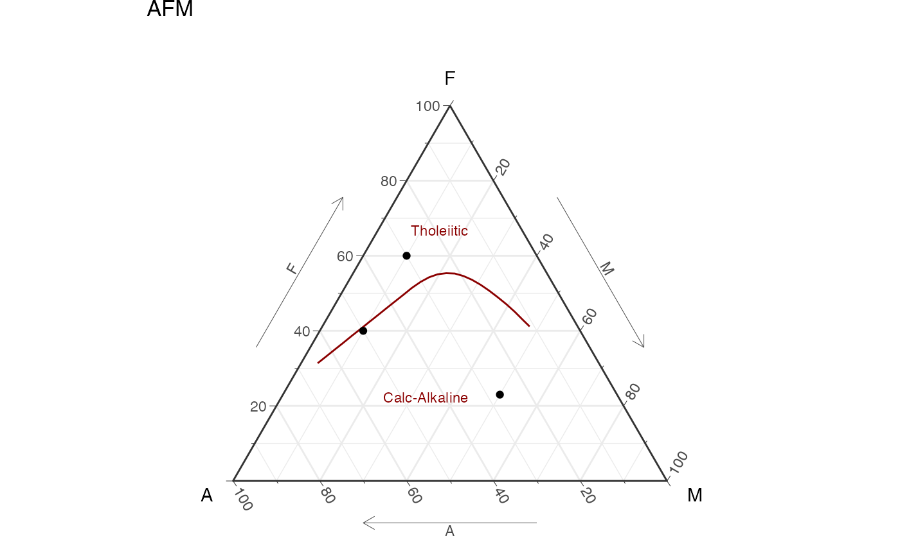

ternary_afm() draws either a static or interactive ternary diagram, in english or spanish. It is a base diagram where data can be plotted.
Details
For plotting data on the ggplot object it would be easier if the names of the dataframe are "a", "f", and "m", that way it gets mapped automatically, if not make sure to use "aes(x=a,y=f,z=m)".
For plotting on the plotly object the mapping of the new data should be as shown in the example: a = ~f, b = ~a, c = ~m, where a refers to the top ("f"), b refers to the bottom left ("a"), and c refers to the bottom right ("m").
The examples show basic usage and how to add data, which can be more customizable.
The AFM diagram is used in igneous petrology to classify volcanic rocks based on their chemical composition, specifically the relative proportions of three major oxides: FeO (F), MgO (M), and Al2O3 (A). The diagram helps to distinguish between tholeiitic and calc-alkaline rock series, which have different magmatic histories and tectonic settings.
See also
Other classification plots, petrology:
TAS(),
ternary_dickinson_qmflt(),
ternary_dickinson_qtfl(),
ternary_fap(),
ternary_feldspars(),
ternary_folk_gsm(),
ternary_folk_qfl(),
ternary_folk_qfm(),
ternary_folk_smc(),
ternary_pyroclastic_size(),
ternary_pyroclastic_type(),
ternary_qap(),
ternary_qap_g(),
ternary_qap_m_hbl(),
ternary_qap_m_ol(),
ternary_qap_um(),
ternary_qap_um_hbl()
Examples
library(ggplot2)
library(plotly)
d = data.frame(f=c(23,40,60),
a=c(27,50,30),
m=c(50,10,10))
# adding data to ggplot object
ternary_afm() + geom_point(data = d)
#> Ignoring unknown labels:
#> • T : "F"
#> • L : "A"
#> • R : "M"

# adding data to plotly object
ternary_afm('plotly') %>%
add_trace(a = ~f, b = ~a, c = ~m,
data = d,
name = 'My data',
type = "scatterternary",
mode = "markers",
marker = list(size=8,color='coral',
symbol=3,opacity=.9),
hovertemplate = paste0('F: %{a}<br>',
'A: %{b}<br>',
'M: %{c}')) %>%
layout(showlegend = TRUE)